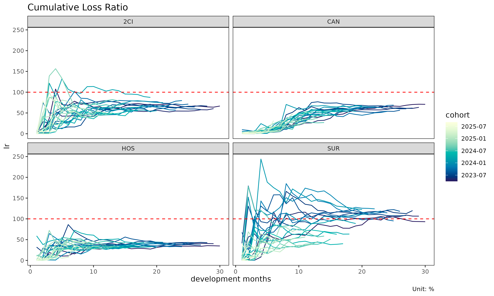
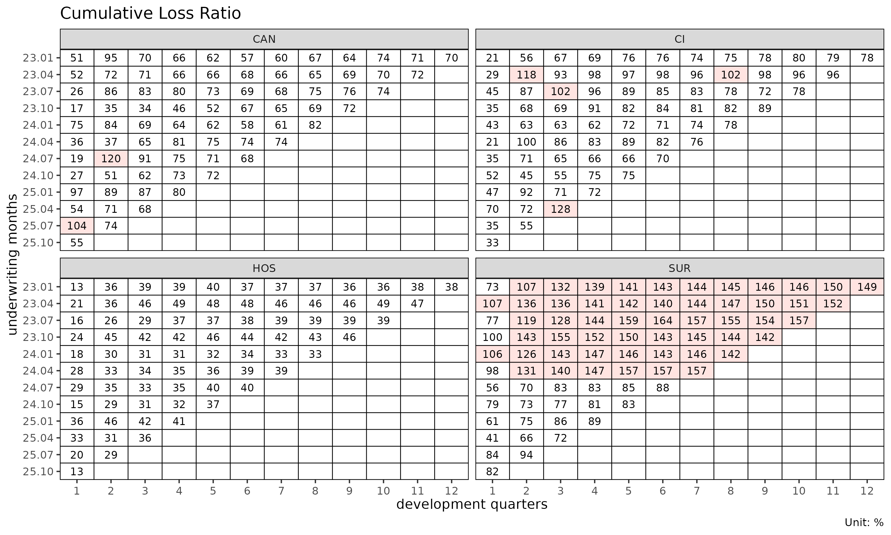

Aggregation frameworks: 집계 프레임워크 (Triangle, Calendar, Total)
Source:vignettes/articles/aggregation-frameworks-ko.Rmd
aggregation-frameworks-ko.Rmd영어 원본 보기: Three aggregation frameworks
동일한 long-format experience 데이터는 분석 질문에 따라 세 가지
방식으로 집계할 수 있다. lossratio 는 각 프레임워크별로
하나의 빌더를 제공한다. 이 문서는 셋을 비교한다.
1. 한눈에 보기
| 빌더 | 출력 객체 | 차원 | 사용 시점 |
|---|---|---|---|
as_triangle() |
Triangle |
코호트 × dev (2D) | SA, ED, CL 추정 |
as_calendar() |
Calendar |
달력 기간 (1D) | 달력 연도 추세, 대각선 효과 |
as_total() |
Total |
포트폴리오 합계 (그룹별) | 상위 수준 손해율 비교 |
개념적으로 다음과 같다.
-
Triangle은 코호트 축 (계약 인수 시점) 과 경과 축 (경과 기간에 따라 손해가 누적되는 양상) 을 모두 보존한다. Chain ladder 의 표준 데이터 구조이다. -
Calendar는 코호트를 대각선 위로 합산한다 — 각 행은 모든 인수 코호트에 걸친 하나의 달력 기간이다. Triangle 의 대각선 합과 동치이다. -
Total은 두 차원을 모두 합쳐 그룹당 하나의 값으로 축약한다. 포트폴리오 수준 비교에 유용하다 (해당 기간에 어떤 상품이 가장 나쁜 손해율을 보였는가?).
2. Triangle (코호트 × dev)
library(lossratio)
data(experience)
tri <- as_triangle(
experience,
groups = "coverage",
cohort = "uy_m",
calendar = "cy_m",
loss = "incr_loss",
exposure = "incr_exposure"
)
head(tri)
#> shape: (6, 18)
#> ┌──────────┬───────────┬────────────┬───┬────────────────┬────────────────┐
#> │ coverage ┆ n_cohorts ┆ cohort ┆ … ┆ exposure_share ┆ incr_exposure… │
#> │ <chr> ┆ <int> ┆ <date> ┆ … ┆ <dbl> ┆ <dbl> │
#> ├──────────┼───────────┼────────────┼───┼────────────────┼────────────────┤
#> │ ci ┆ 36 ┆ 2023-01-01 ┆ … ┆ 0.381171 ┆ 0.381171 │
#> │ ci ┆ 35 ┆ 2023-01-01 ┆ … ┆ 0.380346 ┆ 0.379558 │
#> │ ci ┆ 34 ┆ 2023-01-01 ┆ … ┆ 0.387352 ┆ 0.401744 │
#> │ ci ┆ 33 ┆ 2023-01-01 ┆ … ┆ 0.379535 ┆ 0.356118 │
#> │ ci ┆ 32 ┆ 2023-01-01 ┆ … ┆ 0.377646 ┆ 0.370060 │
#> │ ci ┆ 31 ┆ 2023-01-01 ┆ … ┆ 0.377400 ┆ 0.376114 │
#> └──────────┴───────────┴────────────┴───┴────────────────┴────────────────┘
#> 13 more variables: dev <int>, loss <dbl>, incr_loss <dbl>, exposure <dbl>,
#> incr_exposure <dbl>, ratio <dbl>, incr_ratio <dbl>,
#> margin <dbl>, incr_margin <dbl>, profit <fct>,
#> incr_profit <fct>, loss_share <dbl>, incr_loss_share <dbl>각 행은 (코호트, dev) 셀 하나이며 누적 손해액 / 누적 위험보험료 값을 갖는다. 라인 플롯이나 히트맵으로 시각화할 수 있다.
plot(tri) # 코호트별 궤적, 그룹별 facet
# 그룹이 여럿일 때는 패널마다 셀이 좁아져 가독성이 떨어지므로, 코호트와
# dev 축 모두 분기 단위로 다시 만들어 패널당 ~10 × 10 셀로 줄인다.
# 문서 표시 크기에 맞춘 처리이며, 실제 분석에서는 플롯을 키우면 월
# 단위 그대로 볼 수 있다.
tri_q <- as_triangle(experience, groups = "coverage", cohort = "uy_m", calendar = "cy_m", loss = "incr_loss", exposure = "incr_exposure", grain = "Q")
plot_triangle(tri_q) # 코호트 × dev ratio 히트맵
Triangle 은 다음 함수의 입력으로 사용된다.
-
as_link()— 발달 인자 (ATA / ED 는loss+ 선택적exposure로 선택) -
fit_cl(),fit_ratio()— 추정 -
detect_regime()— 구조 변화 탐지
3. Calendar (달력 기간만)
tri <- as_triangle(experience, groups = "coverage",
cohort = "uy_m", calendar = "cy_m",
loss = "incr_loss", exposure = "incr_exposure")
cal <- as_calendar(tri)
head(cal)
#> shape: (6, 18)
#> ┌──────────┬────────────┬─────────┬───┬────────────────┬────────────────┐
#> │ coverage ┆ calendar ┆ cal_idx ┆ … ┆ exposure_share ┆ incr_exposure… │
#> │ <chr> ┆ <date> ┆ <int> ┆ … ┆ <dbl> ┆ <dbl> │
#> ├──────────┼────────────┼─────────┼───┼────────────────┼────────────────┤
#> │ cancer ┆ 2023-01-01 ┆ 1 ┆ … ┆ 0.492583 ┆ 0.492583 │
#> │ cancer ┆ 2023-02-01 ┆ 2 ┆ … ┆ 0.452030 ┆ 0.428106 │
#> │ cancer ┆ 2023-03-01 ┆ 3 ┆ … ┆ 0.416257 ┆ 0.382514 │
#> │ cancer ┆ 2023-04-01 ┆ 4 ┆ … ┆ 0.389202 ┆ 0.348604 │
#> │ cancer ┆ 2023-05-01 ┆ 5 ┆ … ┆ 0.377872 ┆ 0.352976 │
#> │ cancer ┆ 2023-06-01 ┆ 6 ┆ … ┆ 0.355725 ┆ 0.304826 │
#> └──────────┴────────────┴─────────┴───┴────────────────┴────────────────┘
#> 13 more variables: n_cohorts <int>, loss <dbl>, incr_loss <dbl>, exposure <dbl>,
#> incr_exposure <dbl>, ratio <dbl>, incr_ratio <dbl>,
#> margin <dbl>, incr_margin <dbl>, profit <fct>,
#> incr_profit <fct>, loss_share <dbl>, incr_loss_share <dbl>각 행은 그룹별 달력 기간 하나이다. t 컬럼은 그룹 내부의
순차 인덱스 (1, 2, 3, …) 이며 시계열 관용 표기이다. 경과 기간
(development period, cym - uym) 이 아니다
— 진짜 경과 기간은 Triangle 의 dev 축에 살아
있다.
Calendar 집계는 수학적으로 Triangle 의 대각선 합
이다. 같은 cy_m 값을 갖는 셀
(uy_m/dev_m 와 무관하게) 이 합쳐진다.
활용 사례는 다음과 같다.
- 추세 분석 (“손해율이 달력 시간에 따라 상승 중”)
- 대각선 효과 (calendar-year effect) 탐지 (예: 규제 충격, 보험료 on-leveling 이벤트)
- 포트폴리오 모니터링 대시보드
plot(cal) # x axis: calendar (Date)
4. Total (포트폴리오 요약)
tri_bounded <- as_triangle(
experience[uy_m >= as.Date("2023-04-01") &
uy_m <= as.Date("2024-03-01")],
groups = "coverage", cohort = "uy_m",
dev = "dev_m",
loss = "incr_loss", exposure = "incr_exposure"
)
tot <- as_total(tri_bounded)
head(tot)
#> shape: (4, 9)
#> ┌───────────┬───────────┬─────────────┬───┬────────────┬────────────────┐
#> │ coverage ┆ n_cohorts ┆ sales_start ┆ … ┆ loss_share ┆ exposure_share │
#> │ <chr> ┆ <int> ┆ <date> ┆ … ┆ <dbl> ┆ <dbl> │
#> ├───────────┼───────────┼─────────────┼───┼────────────┼────────────────┤
#> │ ci ┆ 12 ┆ 2023-04-01 ┆ … ┆ 0.33461100 ┆ 0.427133 │
#> │ cancer ┆ 12 ┆ 2023-04-01 ┆ … ┆ 0.11375800 ┆ 0.162389 │
#> │ inpatient ┆ 12 ┆ 2023-04-01 ┆ … ┆ 0.00644687 ┆ 0.016502 │
#> │ surgery ┆ 12 ┆ 2023-04-01 ┆ … ┆ 0.54518400 ┆ 0.393976 │
#> └───────────┴───────────┴─────────────┴───┴────────────┴────────────────┘
#> 4 more variables: sales_end <date>, loss <dbl>, exposure <dbl>, ratio <dbl>그룹당 한 행이며 해당 기간의 손해액 / 위험보험료 / 손해율을 요약한다.
period_from / period_to 인자로 기간을 지정해
그룹 간 비교 가능성을 확보한다.
활용 사례는 다음과 같다.
- 담보별 전체 손해율 비교
- 그룹별 준비금 / 포트폴리오 비중 순위
- 보고용 요약표 작성
5. 데이터 흐름으로 본 집계
experience (long, with demographics)
│
┌────────────────────┼─────────────────────┐
│ │ │
as_triangle as_calendar as_total
(cohort × dev) (calendar series) (portfolio total)
│ │ │
▼ ▼ ▼
Triangle Calendar Total
(2D, projection) (1D, trend) (0D, comparison)세 빌더 모두 동일한 experience 에서 출발해 인구통계
차원을 제거한다. 분석 질문에 맞춰 프레임워크를 선택한다.
6. 속성 스키마
집계 후 각 객체는 원본 컬럼 메타데이터를 속성으로 저장한다 — 플롯 라벨과 집계 주기에 맞는 날짜 표기에 사용된다.
attr(tri, "cohort") # "uy_m"
#> [1] "uy_m"
attr(tri, "dev") # "dev_m"
#> [1] "dev_m"
attr(tri, "grain") # "M"
#> [1] "M"
attr(cal, "calendar") # "cy_m"
#> [1] "cy_m"
attr(cal, "grain") # "M"
#> [1] "M"집계 주기 ("month" / "quarter" /
"half" / "year") 는 원본 컬럼명에서
lossratio:::.get_period_type() 으로 호출 시점에 파생되므로
별도 _type 캐시 속성은 저장하지 않는다.
데이터 컬럼 자체는 cohort / dev /
calendar 로 표준화되어 있으므로, 이후 처리는 집계 주기에
무관하다.